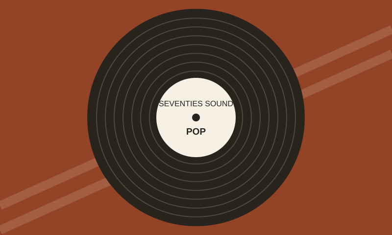

MUSIC FROM 1970–1979
Find your first
70s favourite.
New to the decade? Start with a style, meet an artist and find something to listen to.
Explore the music →
Where do you want to start?


A couple of moments
1974
ABBA win Eurovision with Waterloo.
Read the story
1977
I Feel Love enters the UK chart in July.
View the chart record
A quick introduction
Read the video text
This is a quick introduction to 1970s music. Choose pop, glam rock or disco. Each section gives you an artist and a song to try. You can open the extra facts and use the links if you want to find out more. There is also a Request page if there is an artist or topic you think should be added.